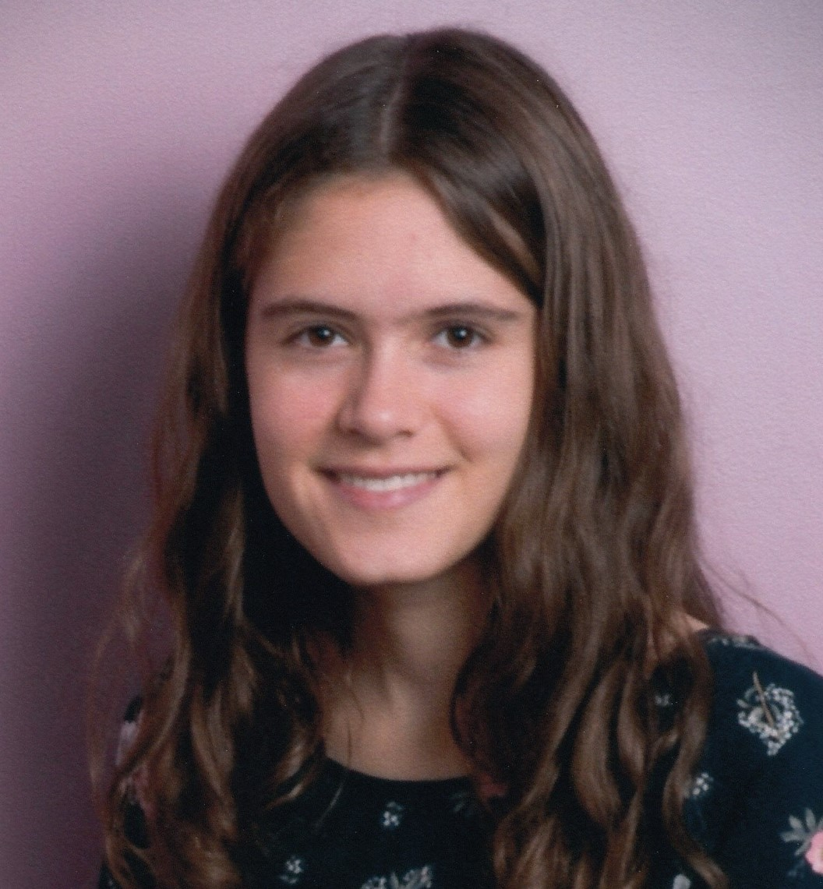

Bio
I am a mechanical engineering major and robotics minor, patent holder, and varsity cross country runner at Johns Hopkins University. I love to learn; during my free time I enjoy taking online courses on a variety of different subjects, through which I have gained knowledge about math, programming, and 3D modeling, among other things. My strongest practical experience is in CAD and 3D printing, with an emerging proficiency in computer programming languages such as MATLAB, Java, and C/C++.

Work Experience
- Product Development Intern, Ford Motor Company: Summer 2022
- Engineering Assistant, NC Department of Public Safety: August 2021 - Present
- Energy Management Interior Lighting Retrofit Intern, NC Department of Public Safety: Summer 2021
- Teaching Assistant, Johns Hopkins University: August 2020 - Present
Languages
- English
- Some Spanish
- Some German
Activities
- Member of the JHU Cross Country and Track team
- Treasurer for JHU's chapter of ASME
- JHU FastForwardU Spark Accelerator Program Participant